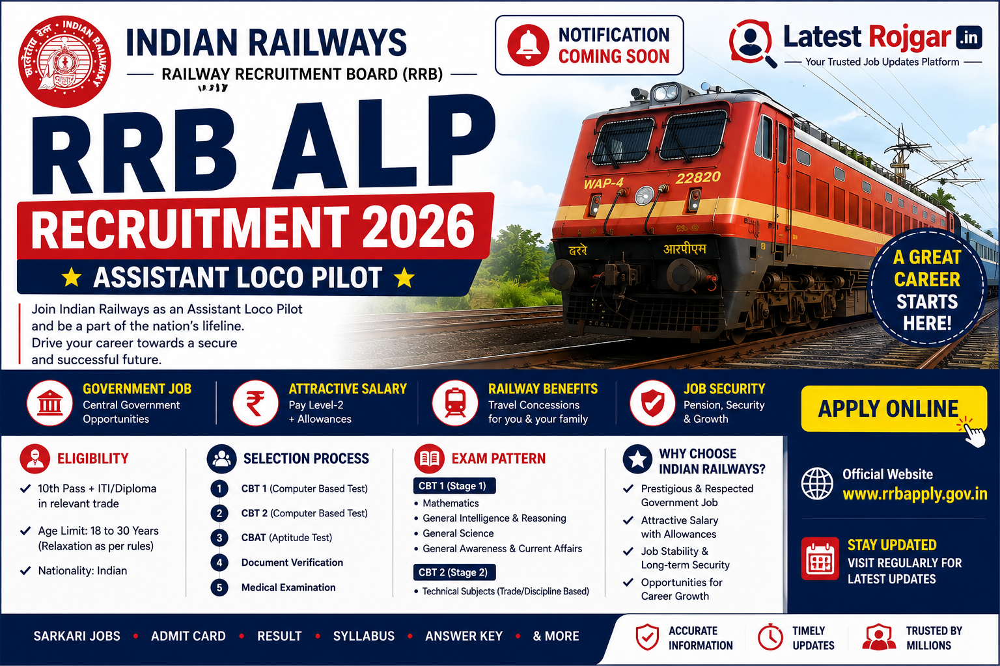

LatestRojgar.in
India's No.1 Government Job Portal
India's No.1 Government Job Portal
The Railway Recruitment Board (RRB) is a government organization under the Ministry of Railways, responsible for recruiting candidates for various posts in Indian Railways such as NTPC, Group D, JE, and ALP. Every year, RRB conducts competitive exams across India, offering secure government jobs with attractive salary, benefits, and career growth. The selection process includes CBT exams, skill tests, document verification, and medical tests, ensuring a transparent and merit-based recruitment system.
RRB ALP is a railway recruitment exam conducted by the Railway Recruitment Board to hire Assistant Loco Pilots in Indian Railways. This is a highly popular government job offering stable career growth, attractive salary, and allowances. The selection process includes CBT Stage 1, CBT Stage 2, aptitude test, document verification, and medical examination. Candidates with 10th + ITI or Diploma qualification can apply for this post.
| Event | Date |
|---|---|
| Start | 15 May 2026 |
| Last To Apply Online | 14 June 2026 (23:59) |
| Last Date To Submit Fees | 16 June 2026 (23:59) |
| Form Correction Date | 17 June 2026 to 26 June 2026 |
| General/OBC/EWS | ₹500 (₹400 Refund after CBT-1) |
| SC / ST / Female / PwBD | ₹250 (Full Refund after CBT-1) |
Payment Mode: Online (UPI / Card / Net Banking)
Refund only after appearing CBT Stage 1
| Post | Vacancy |
|---|---|
| Assistant Loco Pilot | 11127 |
| Zone | Railway Zone | UR | SC | ST | OBC | EWS | Total | ExSM |
|---|---|---|---|---|---|---|---|---|
| Ahmedabad | WR | 62 | 22 | 11 | 38 | 14 | 147 | 15 |
| Ajmer | NWR | 262 | 97 | 59 | 142 | 40 | 600 | 60 |
| Ajmer | WCR | 56 | 18 | 0 | 32 | 12 | 118 | 12 |
| Prayagraj | NCR | 284 | 37 | 27 | 65 | 44 | 457 | 45 |
| Prayagraj | NR | 62 | 23 | 11 | 42 | 15 | 153 | 15 |
| Bengaluru | SWR | 80 | 31 | 15 | 54 | 20 | 200 | 20 |
| Bhopal | WCR | 194 | 74 | 23 | 117 | 15 | 423 | 42 |
| Bhopal | WR | 15 | 8 | 0 | 6 | 1 | 30 | 3 |
| Bhubaneshwar | ECoR | 370 | 120 | 58 | 176 | 77 | 801 | 80 |
| Bilaspur | CR | 131 | 48 | 24 | 87 | 32 | 322 | 32 |
| Bilaspur | SECR | 84 | 29 | 14 | 53 | 20 | 200 | 20 |
| Chandigarh | NR | 56 | 39 | 23 | 49 | 20 | 187 | 19 |
| Chennai | SR | 93 | 24 | 14 | 41 | 14 | 186 | 19 |
| Gorakhpur | NER | 28 | 11 | 37 | 17 | 12 | 105 | 10 |
| Guwahati | NFR | 272 | 109 | 63 | 164 | 68 | 676 | 68 |
| Jammu-Srinagar | NR | 158 | 58 | 30 | 110 | 44 | 400 | 40 |
| Kolkata | ER | 135 | 53 | 35 | 89 | 32 | 344 | 34 |
| Kolkata | SER | 280 | 101 | 52 | 40 | 24 | 497 | 50 |
| Malda | ER | 109 | 41 | 20 | 73 | 27 | 270 | 27 |
| Malda | SER | 117 | 43 | 22 | 78 | 29 | 289 | 29 |
| Mumbai | CR | 290 | 207 | 99 | 344 | 138 | 1078 | 108 |
| Mumbai | SCR | 32 | 7 | 4 | 26 | 9 | 78 | 8 |
| Mumbai | WR | 14 | 5 | 3 | 10 | 5 | 37 | 4 |
| Muzaffarpur | ECR | 18 | 6 | 3 | 11 | 4 | 42 | 4 |
| Patna | ECR | 41 | 16 | 8 | 28 | 10 | 103 | 10 |
| Ranchi | ECR | 224 | 83 | 42 | 150 | 56 | 555 | 56 |
| Ranchi | SER | 248 | 150 | 63 | 213 | 71 | 745 | 74 |
| Secunderabad | ECoR | 387 | 119 | 57 | 228 | 33 | 824 | 82 |
| Secunderabad | SCR | 238 | 90 | 45 | 162 | 61 | 596 | 61 |
| Siliguri | NFR | 243 | 90 | 46 | 161 | 60 | 600 | 60 |
| Thiruvananthapuram | SR | 28 | 8 | 5 | 22 | 1 | 64 | 7 |
| Total | 4611 | 1767 | 913 | 2828 | 1008 | 11127 | 1114 | |
Note: Candidates selected under RRB Secunderabad may be posted in South Coast Railway when it becomes operational.
| Post | Salary Details |
|---|---|
| Assistant Loco Pilot |
Basic Pay: ₹19,900 (Level 2) Allowances: DA + HRA + TA In-Hand Salary: ₹25,000 – ₹35,000 per month (Approx) |
18 to 30 years
Candidates interested in RRB ALP Recruitment 2026 can apply online through the official Railway Recruitment Board portal. Follow the step-by-step process carefully to successfully submit the application form.
✔ Candidates must ensure that all details are correct before submission, as incorrect information may lead to rejection of the application.
